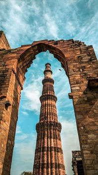
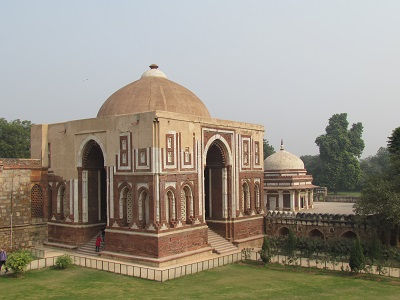

THE DELHI SULTANATE
Invasions by Mahmud of Ghazni and
Muhammad Ghori into India ultimately resulted in the
establishment of the Delhi Sultanate. Five different dynasties–
- The Slave/Mamluk (1206–1290)
- The Khalji (1290–1320)
- The Tughlaq (1320–1414)
- The Sayyids (1414–1451)
- The Lodis (1451–1526)
are collectively referred to as the Delhi Sultanate. The rulers,
termed as
Sultans, were of
Turkish and
Afghan origin.
The Ilbari or Mamluk or Slave Dynasty(1206-1290 AD)
-
After Muhammad Ghori’s death, all the Muslim rulers who ruled
over India from AD 1206-1290 were either
slaves or were descendants of the slave ruler. So, the
Dynasty is generally known as the
Slave Dynasty.
-
‘Mamluk’ was the Arabic word meaning ‘owned’,
used to refer slaves, who were used as domestic labour or
artisans.
-
The dynasty is also called Ilbari Dynasty, as all the
rulers of this dynasty except Aibak belonged to the
Ilbari tribe of Turks.
- Three dynasties were established during this period.
-
Qutbi dynasty (c.1206–1211 CE) founded by Qutubuddin
Aibak.
-
First Ilbari dynasty (c.1211–1266 CE) founded by
Iltutmish.
-
Second Ilbari dynasty (c.1266–1290 CE) founded by
Balban.
Qutubuddin Aibak (1206–10)
-
Originally a turkish slave, Qutubuddin, because of his
merit and loyal service rose to the post of Governor (of
Ghori’s Indian possessions) by Muhammad Ghori. After Ghori’s
death, Aibak became the ruler of north India and founded the
Slave dynasty.
-
He assumed the title of ‘Sultan’ and made
Lahore his capital.
-
For his generosity, he was given the title of
Lakh Baksh.
-
He sponsered the construction of the mosque –
Quwwat-ul-Islam (Delhi).
-
He started construction of the Qutub Minar (only the
first Storey) in the memory of the famous Sufi saint,
Khwaja Qutbuddin Bakthiyar Kaki (it was later completed
by Iltutmish).
-
Aibak died suddenly in c.1210 CE, while playing
Chaugan (horse polo).
Aram Shah (AD 1210):After Qutubuddin’s death, his son
Aram Shah succeeded him. Aram Shah proved quite incompetent.
Some of the nobles rose to the occasion and invited
Aibak’s son-in-law Iltutmish to ascend the throne. He
deposed Aram Shah and secured the throne for himself.

Qutub Minar
Mehrauli, New Delhi
Shamsuddin Iltutmish (1210–1236 AD)
-
The real consolidator of Turkish rule in India. He belonged to
the
Ilbari tribe and hence his dynasty is also known as the
Ilbari dynasty. After becoming Sultan, he shifted his capital
from Lahore to Delhi.
-
During his period, the Mongols under their leader
Genghis Khan, made their appearance for the first time
in Indian Subcontinent. He saved Delhi Sultanate from the
wrath of Genghis Khan by refusing shelter to Jalaluddin
Mingburnu (the Khwarazmian ruler of Afghanistan), whom Genghis
Khan was chasing.
-
He completed the construction of the
Qutab Minar at Delhi. He is considered as the
father of Tomb Building. (built Sultan Garhi in
Delhi, the first Islamic Mausoleum built in 1231 AD for the
eldest son of Iltumish).
-
He patronized Minhas-us-Siraj who wrote
Tahaqat-i-Nasiri, an elaborate history of the Islamic
world written in Persian.
-
Since he did not consider any of his sons worthy of the
throne, he declared his daughter Razia as successor,
deviating from normal practice.
Iltumish's Administration
-
Iltutmish organized the administration of the Sultanate,
laying the foundation for its dominance over northern India
until the Mughal invasion.
-
He introduced the arabic coinage of silver tanka and the
copper jital - the two basic coins of the Sultanate period.
-
Iqtadari System: He divided his empire into Iqtas
(assignment of land in lieu of salary). Every Iqtadars had to
maintain law and order and collect revenue. After deducting
own salary and expenses, they had to send the surplus to
central government. As a matter of fact, the Iqtadars were
transferable.
-
He organized turkan-i-chahalgani or Chalissa, a new
class of ruling elite of forty powerful military leaders,
the Forty. These were Turkish amirs (nobles) who
advised and helped the Sultan in administering the Sultanate.
After the death of Iltutmish, this group assumed great power
in its hands. For a few years they decided on the selection of
Sultans one after the other. The group was finally eliminated
by Balban.
Razia Sultana (1236–1240 AD)
-
Iltutmish was succeeded by Razia's half-brother
Ruknuddin Firuz , whose mother Shah Turkan planned to
execute her. During a rebellion against Ruknuddin, Razia
instigated the general public against Shah Turkan, and
ascended the throne after Ruknuddin was deposed in 1236.
-
She was the first and
only female Muslim ruler of medieval India.
-
She discarded female apparel and purdah; she held court with
her face unveiled. She started appearing in public dressed in
traditional male attire and rode on elephants through the
streets of Delhi, making public appearances like the earlier
Sultans.
-
The Turkic nobles who supported her, expected her to be a
figurehead, but she increasingly asserted her power.
-
Her recruitment of a few
non-Turks to important posts invited the wrath of the
Turkish amirs. Particularly the appointment of a non-Turk,
Yakut to the high office led to opposition.
-
The nobles conspired against her and made Altunia,
Governor of Bhatinda / Tabarhinda (Punjab) rebel. Razia,
accompanied by Yakut, marched against Altunia. At Tabarhinda,
the rebel forces killed her loyalist Yaqut, and imprisoned
her.
-
After deposing Razia, the nobles at Delhi had distributed
important offices and iqtas among themselves, ignoring claims
of Altunia, who had arrested Razia at Tabarhinda. Altunia lost
all hope of realizing any benefits from Razia's overthrow, and
decided to ally with her. Razia also saw this as an
opportunity to win back the throne, and married Altunia in
September 1240.
-
Altunia assembled an army. In September–October 1240, Sultan
Muizuddin Bahram (another son of Iltumish) led an army
against the forces of Altunia and Razia, and defeated them on
14 October 1240. Altunia and Razia were forced to retreat to
Kaithal (haryana), where they were killed.
After Raziya, the battle of succession continued with puppet
rulers while the real power was exercised by the Chahalgani
/Chalissa / The forty.
Ghiyasuddin Balban (1265–1286 AD)
-
Balban ascended the throne in 1265, after killing all members
of Iltutmish’s family. He himself was a
member of the chalissa or chahalgani (the forty).
-
Balban knew that the real threat to the monarchy was from the
nobles called the Forty. He was convinced that only by
enhancing the power and authority of the monarchy he could
solve this problem. So he broke the power of chahalgani and
restored the prestige of the crown.
-
He declared the Sultan as, the
‘representative of God on the Earth’. He took up the
title of Zil-i-Ilahi (Shadow of God).
-
Balban introduced rigorous court discipline and new customs
such as
sijada (prostration, kneeling and touching the ground)
and
paibos
(kissing the Sultan’s feet) to prove his superiority over the
nobles. He refused to laugh and joke in the court, and even
gave up drinking wine so that no one may see him in a
non-serious mood.
-
He introduced the Persian festival of Nauroz (meaning
New year).
-
He organized a strong centralized army, both to deal with
internal disturbances, and to repel the Mongols who had
entrenched themselves in the Punjab and posed a serious threat
to the Delhi Sultanate.
-
He separated the Diwan-i-wazarat (Finance Department)
from the
Diwan-i-Arz
(Military Department).
-
He followed the policy of Blood and Iron.This policy
implied being ruthless to the enemies. He administered justice
with extreme impartiality.
-
He was a patron of Persian literature, and showed special
favour to
Amir Khusro.
Amir Khusro
-
Amir Khusrau (c.1252–1325 CE) was the most famous Persian
writer of this period.
-
Amir Khusrau’s Khazain-ul-Futuh speaks about
Alauddin’s conquests.
-
His famous work, the Tughlaq Nama, deals with the
rise of Ghiyasuddin Tughlaq.
-
Khusro is regarded as the "father of qawwali " (a devotional
form of singing of the Sufis).
-
Alauddin Khilji gave the title Tuti-i-Hind (Parrot of
India) to Amir Khusro.
- The invention of sitar is also attributed to him.
Kaiqubad (AD 1287-90): Grandson of Balban. Kaiqubad was
killed by the Khalji rulers. This led to the end of Ilbari
dynasty and establishment of the Khalji dynasty.
Khalji Dynasty (1290-1320 AD)
The Khaljis were of Turko-Afghan origin. A group of Khalji nobles
led by
Jalaluddin Khalji, overthrew the incompetent successors of
Balban in 1290 AD. The Khalji rebellion was welcomed by the
non-Turkish nobility. The Khaljis did not exclude the Turks from
high offices, but
ended the Turkish monopoly.
Jalaluddin Khalji (1290-1296 AD)
-
Jalaluddin Khalji laid the foundation of the Khalji dynasty.
He was 70 years old when he came to power and ruled only for a
short span of six years. He was known as a mild-mannered,
humble and kind monarch to the general public (including
hindus).
-
He avoided harsh punishments. Jalaluddin tried to win the
goodwill of the nobility by adopting
policy of tolerance.
-
During his reign in c.1294 CE, Devagiri/Deogiri (Daulatabad,
Maharashtra) was invaded by Alauddin Khalji.
-
In 1296 CE, Alauddin Khalji treacherously murdered his
father-in-law Jalaluddin Khalji and usurped the throne of
Delhi. He proclaimed himself Sultan by winning over the nobles
and soldiers to his side by lavish use of gold (accumulated
from Devagiri).
Alauddin Khalji (1296-1316 AD)
-
He came to the throne by treacherously murdering his uncle and
father-in-law Jalaluddin Khalji.
-
Jalaluddin’s policy of tolerance was reversed by
Alauddin Khalji, who awarded drastic punishments to all those
who dared to oppose him. He massacred the rebellious nobles,
relatives, family members and the Mongols who had settled in
Delhi. Alauddin gave harsh punishment even to the wives and
children of all nobles.
-
According to Barani, the author of
Tarikh-i-Firuz Shahi, Alauddin was convinced that the
general prosperity of the nobles, inter-marriages between
noble families, inefficient spy-system, and drinking liquor,
were the basic reasons for the rebellions. Therefore, he laid
four rules:
- He confiscated the properties of the nobles.
-
The intelligence system was reorganized and all the secret
activities of the nobles were immediately reported to the
Sultan.
- The use of liquor and intoxicants was prohibited.
-
Social gatherings, inter-noble marriages and festivities
without the permission of Sultan were forbidden.
Military Conquests of Alauddin
The military conquests of Alauddin Khalji include his expedition
against Gujarat, Rajputana, and the Deccan.
Gujarat Conquest: During the Gujarat Conquest against
Rai Karan, temple of Somnath was captured along with
destroying it. An enormous gold was collected. Alauddin married
the Raja’s wife Kamla Bai and acquired Malik Kafur (a
eunuch and great military general who later led the Khalji
dynasty invasions to South India).
Conquest of Rajputana
-
Ranthambore: reputed to be the strongest fort of
Rajasthan and had earlier defied Jalaluddin Khalji. In c. 1301
CE, the fort fell to Alauddin. Women committed jauhar or
self-immolation (described by Amir Khusrau).
-
Chittor: In c. 1303 CE, Alauddin besieged Chittor,
another powerful state of Rajputana. According to some
scholars, Alauddin attacked Chittor because he coveted
Padmini, the beautiful queen of
Raja Ratan Singh. The Rajput women including Rani
Padmini performed jauhar. This Padmini episode was graphically
mentioned in the book Padmavath, written by
Jayasi. According to Amir Khusrau, the Sultan ordered a
general massacre of the civil population.
- He also captured Malwa .
Conquest of Deccan and South India
-
This region was ruled by four important dynasties – Yadavas of
Devagiri, Kakatiyas of Warangal, Hoysalas of Dwarasamudra, and
the Pandyas of Madurai.
-
Malik Kafur captured Devagiri and Warangal, overthrew the
Hoysala Empire south of the Krishna River and raided Madurai
in Tamil Nadu. He then looted the treasury in capitals and
from the temples of south India. Among these loots was the
Warangal loot that included the
Koh-i-Noor .
Administration of Alauddin
-
Alauddin maintained a large standing army. He managed to raise
such a large army by paying relatively low salaries to his
soldiers, and introduced market price controls to ensure that
the low salaries were acceptable to his soldiers.
-
He paid soldiers in cash. Although he was opposed to granting
lands to his generals and soldiers, he generously rewarded
them after successful campaigns, especially those in Deccan.
-
He was the first Turkish sultan who separated religion from
politics. He proclaimed kingship knows no kinship.
-
He introduced Chehra and Dagh System wherein the
Chehra (detailed description of each soldier) and Dagh
(branding of horses) was maintained.
-
Alauddin constructed the Alai Darwaja, the entrance
gate of the Qutub Minar. He also built the palace of thousand
pillars called ‘Hazar Situn’ in Delhi. He built his
capital at Siri in Delhi.
Market/Economic Reforms
-
Alauddin controlled the market by many regulations. He fixed
the cost of all commodities.
-
The supply of grain was ensured by holding stocks in
government store houses. No hoarding was allowed and even
during the famine the same price was maintained.
-
The sale of liquor and intoxicants was prohibited and gambling
too was banned.
-
He established the market control department called
Diwani Riyasat. Every merchant was registered under the
Market Department.
-
Alauddin brought a large tract of fertile land under the
directly-governed crown territory, by eliminating iqta's, land
grants and vassals especially in the Ganga-Yamuna Doab region.

Alai Darwaja
Mehrauli, New Delhi
Only four years after the death of Alauddin, the Khalji dynasty
came to end and power passed into the hands of the Tughlaqs.
The Tughlaq Dynasty (1320-1414 AD)
Ghiyasuddin Tughlaq (1320-1325 AD)
-
Founder of the Tughlaq dynasty and the first Sultan to take
the title of
Ghazi i.e., Slayer of Infidels (non-religious people).
-
He liberalised Alauddin’s administrative policies and took a
keen interest in construction of canals and formulated the
famine policy.
- He built the town called Tughlaqabad near Delhi.
-
He dispatched his son,
Jauna Khan /Mohammad Bin Tughlaq, to re-establish
authority in Warangal (Kakatiya) and Madurai (Pandayas).
-
He died due to the collapse of a wooden structure; some
scholars like
Ibn Batuta (Moroccan Traveller) believe that his death
was an act of sabotage orchestrated by his son Jauna Khan.
Mohammad Bin Tughlaq/ Jauna Khan (1325–51 AD)
-
Ghiyasuddin sent the young Muhammad to the Deccan to campaign
against king Prataparudra of the Kakatiya dynasty whose
capital was at Warangal in 1321 and 1323. Muhammad ascended to
the Delhi throne upon his father's death in 1325.
-
He is considered an ill-fated idealist owing to his
ambitious schemes and novel experiments, which ended in
miserable failures.
- Ambitious Projects of Muhammad-Bin-Tughlaq:
-
Taxation in the Doab (1326): The Sultan made an
ill-advised financial experiment in the Doab between the
Gangas and the Yamuna by increasing the rate of taxation.
This measure proved to be ill-timed as the Doab was passing
through famine.
-
Transfer of the Capital (1327): He transferred the
capital from Delhi to Deogiri (Maharashtra). He renamed
Deogiri as Daulatabad. But the capital shifted back
to Delhi after two years because of the lack of water supply
in Daulatabad. This arduous journey claimed the life of many
people.
-
Introduction of Token Currency (1329): Muhammad
Tughlaq decided to introduce Bronze/Copper coins, instead of
the silver coin which would have the same value. Very few
people exchanged gold/silver for copper and the tokens were
easy to forge, which lead to heavy losses.
-
The Khurasan Expedition (1329): Under the vision of
Universal Conquest, he decided to conquest Khurasan and Iraq
and mobilised a huge army for this purpose but as conditions
in Iraq improved, he abandoned the plan and and disbanded
the army.
-
Qarachil Expedition (1330): This expedition was
launched, in Kumaon hills in the Himalayas, allegedly to
counter Chinese incursions. He was met with several
setbacks.
-
He was the only Delhi Sultan who had received a comprehensive
literary, religious, and philosophical education.
-
Historians have conflicting views in regards to his religous
tolerance.
-
He set up a new department of Agriculture,
Diwan-i-kohi. He launched a scheme by which
takkavi loans (loans for cultivation) were given to the
farmers to buy seed and to extend cultivation.
-
During his reign, the famous moroccan traveller
Ibn Battuta came to India in c.1334 CE and acted as a
Qazi (Judge) at Delhi for eight years.
-
He built the fort of Adilabad and the
city of Jahanpanah in Delhi.
-
During his last days, the whole of South India became
independent and three major states emerged:
- Vijaynagar kingdom – Harihara and Bukka (c.1336 CE)
- Bahmani Kingdom (Deccan) – Hasan Gangu (c.1347 CE)
- Sultanate of Madurai- Hasan Shah
-
Muhammad bin Tughlaq’s health became worse and he died in
c.1351 CE. It is believed that the Sultan was freed from his
people and the people from the Sultan.
Firoz Shah Tughlaq (1352–1388 AD)
-
He was chosen as Sultan by the nobles. So, his policy aimed to
appease the nobles and the army.
-
Instead of reasserting his authority over the Deccan and south
India, he tried to safeguard his authority over north India.
-
He strictly followed the advice of the ulemas in running the
administration. As per the Islamic law, he levied the taxes.
Jaziya was strictly imposed on non-Muslims. He treated
Hindus with harsh attitude.
-
He not only revived the
Iqtadari system, but also made it hereditary. Soldiers
were given land assignments (jagir), and even their
recruitment was made hereditary.
-
Many new towns were built during his reign. The famous among
them was
Firozabad near Red Fort in Delhi.
-
Old monuments like the Jama Masjid and the
Qutb Minar (which was struck by lightning, and the
fourth storey was subsequently replaced by two smaller ones)
were repaired. Ashokan pillars from Topara and Meerut
were brought to Delhi.
-
Firoz patronized Barani, a famous historian who wrote:
-
Tarikh-i-Firoz Shah, an interpretation of the
history of the Delhi Sultanate up to the then-present Firuz
Shah Tughlaq.
-
Futwa-i-Jahandari, a work containing the political
ideals to be pursued by a Muslim ruler in order to earn
religious merit and the gratitude of his subjects.
When Firoz Shah Tughlaz died in c.1388 CE, the struggle for
power between the Sultan and the nobles started once again. His
successors had to face the rebellion of the slaves created by
Firoz.
Timur’s Invasion: Timur, the head of the Chaghtai Turks
and the ruler of Mongols in (Central Asia) invaded India in
1398, during the reign of Nasiruddin Muhammad Tughlaq ( grandson
of Firuz Shah). He is said to have inflicted on India more
misery, than had ever before been done by a conqueror in a
single invasion. Timur nominated Khizr Khan to rule over
Punjab and himself returned to Central Asia. He died on his way
to conquer China in AD 1404.
Saiyyad Dynasty (1414- 51 AD)
-
Very little is known about the rule by the Sayyid dynasty.
Khizr Khan assumed power by claiming to represent Timur. His
authority was questioned even by those near Delhi.
-
Much of the former territories of the sultanate were lost to
independent rulers.
-
His successor was Mubarak Khan, who renamed himself Mubarak
Shah and unsuccessfully tried to regain lost territories in
Punjab.
-
The Sayyid dynasty was displaced by the Lodi dynasty in 1451.
Lodhi Dynasty (1451-1526 AD)
The Lodhis were the last ruling family of the Sultanate period
and the first to be headed by the complete Afghans who
were ruling over Sirhind (Punjab) when the Sayyids were
in India.
Bahlol Lodhi (1451–89 AD)
-
With the help of a few nobles, Bahlol Lodhi took charge of the
army, and became the Sultan. Thus, he laid the foundation of
Lodhi dynasty.
-
Bahlul did much to stop rebellions and uprisings in his
territories, and extended his holdings over Gwalior (MP),
Jaunpur(UP) and upper Uttar Pradesh.
Sikander Lodhi (1489–1517 AD)
- His real name was Nizam Khan.
-
He was a good administrator. Roads were laid and many
irrigational facilities were provided for the benefit of the
peasantry. He laid great emphasis on justice.
-
Despite certain laudable qualities, he was a bigot and showed
little tolerance towards the non-Muslims. He destroyed many
Hindu temples and imposed many restrictions on the Hindus.
-
He also moved his capital and court from Delhi to Agra.
The growth of Agra continued during the Mughal Empire, after
the end of the Delhi Sultanate.
Ibrahim Lodhi (1517–1526 AD)
-
He was the eldest son of Sikander Lodhi, who was not only
arrogant but a
repressive
ruler too.
-
Ibrahim did not enjoy the support of Afghan and Persian nobles
or regional chiefs. He openly insulted and humiliated his
nobles in court and put to death those nobles who revolted
against him.
-
Daulat Khan Lodhi, the governor of the Punjab, greatly
displeased by the arrogance and insult of Ibrahim,
invited Babur to invade India.
-
Babur marched against Delhi and defeated and killed Ibrahim
Lodhi in the
first Battle of Panipat (c.1526 CE) in Haryana. The
Afghan kingdom thus lasted for only seventy-five years.
“The Sultanate of Delhi, which had its birth on the
battlefield of Tarain in c. 1192 CE, breathed its last in c.
1526 CE, a few miles away on the battlefield of Panipat.”
Overview of Administration during Sultanate Period
Central Administration
-
The Sultan was assisted by a number of ministers who were
chosen by Sultan and they remained in office at his pleasure.
-
The post of Naib was the most powerful one. The Naib
practically enjoyed all the powers of the Sultan and exercised
general control over all the departments.
-
Next to him, was the Wazir, who headed the finance
department called Diwan-i-Wizarat .
-
The military department was called Diwan-i-Arz . It was
headed by the Ariz-i-mumalik who was responsible for
recruiting the soldiers and administering the military
department.
-
Diwan-i-Rasalat was the department of religious
affairs, which dealt with pious foundations and gave stipends
to deserving scholars and man of piety. It was headed by chief
Sadr who also functioned as Chief Qazi , as the
head of the judicial department.
Provincial Administration
| Unit |
Headed By |
| Iqtas (province) |
Iqtadar/ muqtis or walis (governor) |
| Shiqs (districts) |
Shiqdar |
| Paragana (sub-district) |
Amil |
| Village |
Muqaddam or Chaudhari for administration and Patwari for
accounting
|